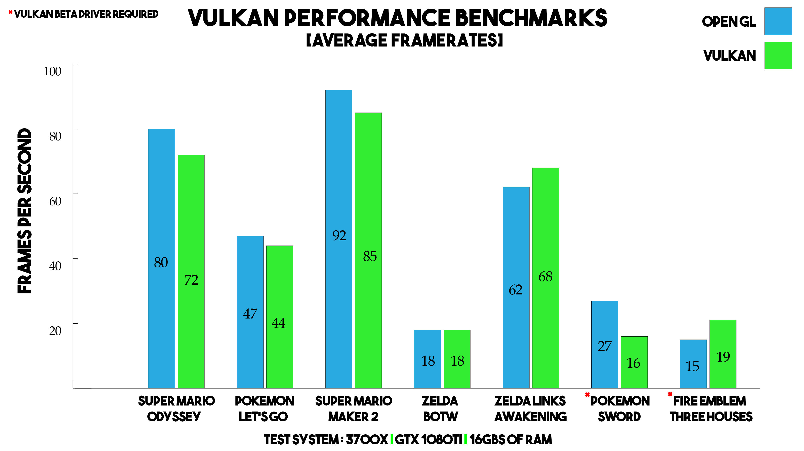
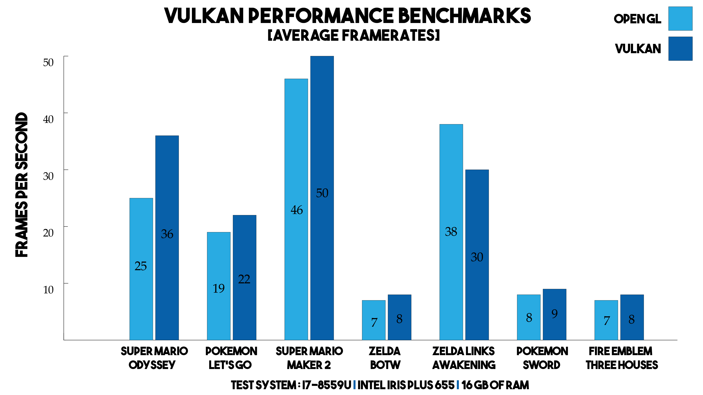
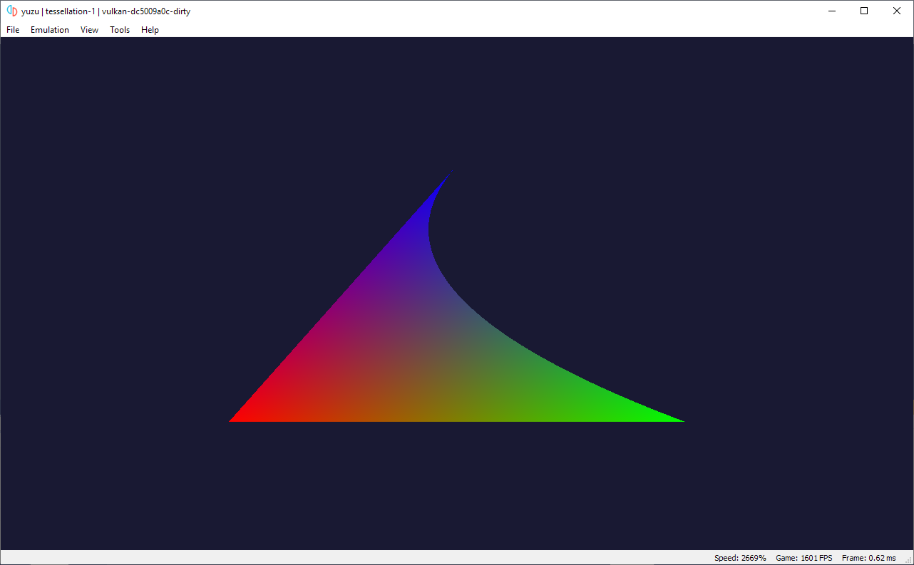
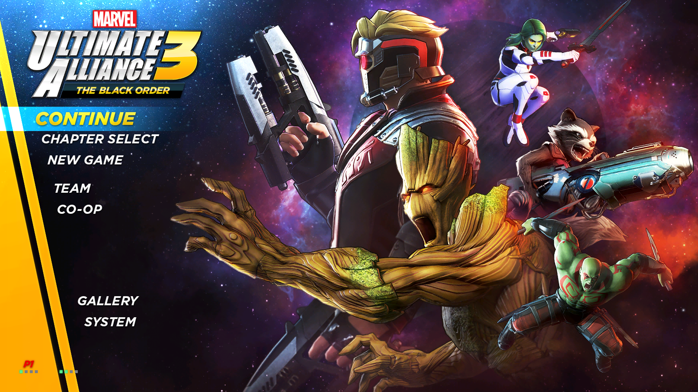

A very good day to all you yuz-ers out there.
The curtains are up and the most awaited feature of yuzu is finally here!
The Vulkan renderer for yuzu is now available for users on Early Access.
To find out more about it, jump right in!
Vulkan for yuzu
For the past year, the most awaited and requested feature for yuzu has been the Vulkan Renderer.
Many users, especially those with AMD GPUs, have been patiently waiting for this day.
Download the latest Early Access build via the installer now to try it out!
After you download the build, go to Emulation -> Configure -> Graphics and select Vulkan in the API dropdown.
We highly recommend using the latest drivers, or beta drivers, as vendors are actively fixing bugs in their Vulkan drivers. Nvidia appears to encounter the least bugs, but it is still strongly recommended to keep your drivers up to date.
How It All Started…
Barely a year had passed since the Nintendo Switch launched, but there it was, yuzu - The Nintendo Switch Emulator - already running several games with stellar performance and stunning graphics.
But it came with a caveat; to deliver that performance, yuzu exclusively needed an Nvidia GPU among several other hardware requirements.
This was mainly due to the low performance on AMD GPUs OpenGL Windows drivers.
For AMD users, this meant that they either had to start using Linux, where the drivers were a little better, or had to buy an Nvidia GPU, and neither of those was an easy choice.
Thus we quickly realized the need for a way to deliver the same performance to our AMD users, and Vulkan seemed to be the answer!
To tackle this, one of our resident GPU emulation experts - Rodrigo (aka ReinUsesLisp) - set out to master Vulkan and implement a renderer in yuzu using this API.
Rodrigo started experimental work on the Vulkan renderer, with the customary Hello World - by rendering a RED screen.
He used existing switch homebrew like SpaceNX and Push A button, and later wrote his own homebrew app of a blinking screen and got them to render using the Vulkan renderer successfully.
With some progress, it was now time for him to implement shaders on the Vulkan renderer.
(If you are interested, you can check out the homebrew here.)
Before we get into deeper technical details, we need to understand a few things:
- The Nintendo Switch has an Nvidia GPU and games can use either OpenGL or NVN API (Nvidia proprietary API), to communicate with the GPU and render visuals. (Games might use Vulkan, but we are yet to see any games using it)
- GPUs use small programs called shaders to control the GPU rendering pipeline. For more info, read here.
- Shaders have instructions inside them for the GPU to perform various types of operations.
- yuzu decodes these shader instructions from games to guest GPU (Switch), turns them into GLSL (OpenGL Shading Language) code, and then rebuilds those shaders to work on the Host GPU (User GPU) to get games rendering.
- SPIR-V is an intermediate language for defining shaders in Vulkan, which is sort of similar to OpenGL’s GLSL. For more info, read here.
Now that we have some context, let’s dive deeper!
Rodrigo wrote Sirit - a runtime SPIR-V assembler to generate SPIR-V code easily.
Basically, there isn’t a built-in way to generate SPIR-V code.
Most game developers actually use a high level shader language and compile them statically.
And as yuzu could only convert the game shaders to GLSL, he used Sirit to generate SPIR-V shaders, instead of GLSL, for Vulkan.
Game developers usually write shaders using GLSL or HLSL and compile it to SPIR-V with a compiler and send that to the driver.
However, yuzu Vulkan generates SPIR-V on the go and sends that to the driver.
When development began, yuzu didn’t have a shader IR (intermediate representation).
As a result, Rodrigo had to copy and adapt many parts of the code, to the point that it became bug ridden and unmaintainable.
At this stage, we decided to write a shader IR that would allow us to share the shader decoding logic on both GLSL and SPIR-V.
Vulkan experiments - Super Mario Odyssey (broken)
An IR (intermediate representation) is a representation of the program “between” source and target languages. A shader IR in yuzu’s context would be the representation of game shaders decoded from their actual form and before they were rebuilt for GLSL or SPIR-V.
In regards to Shader IR, Blinkhawk rewrote how guest shaders are analysed in control flow (the code that tells how a shader diverges in execution) from the ground up.
He created a decompiler that removes stack based branches which result in under performant shaders in Intel and AMD, and created a more advanced decompiler that could convert all the branches in the shaders into higher level structures (ifs, loops, etc).
He also corrected control flow in SPIR-V shaders and fixed some crashes that occured on AMD due to unoptimized control flow structures.
Simply put, he redid the whole system on which shader IR is based, after Rodrigo converted most of the instructions into IR and setup the foundation.
Kind of like reorganizing a messy closet, after segregating its contents.
While the shader IR was being worked on, Rodrigo was parallelly working on the Vulkan renderer, and managed to get more homebrew working, but soon ran into further issues.
As a result, development of Vulkan didn’t continue for a few months, and quite some time was spent implementing the Shader IR.
Problems and Solutions…
Problem 1: Texture Cache
The texture cache handles everything related to texture management.
When a game asks to sample a texture, we create a texture like the game wants and we fill its texels (pixels) from guest data.
When the game wants to render to a texture, we do the same process.
The texture cache is full of border cases that need to be properly handled.
Rodrigo and Blinkhawk, our GPU emulation experts, had just started working on the shader IR and Rodrigo ran into issues with the Vulkan renderer.
Upon investigation, they realized that the existing texture cache was too heavily embedded in OpenGL and there was no easy way to make it API agnostic.
In other words, they found it was very difficult to decouple the texture cache’s backend logic from the frontend, so that they could use it for both OpenGL and Vulkan.
Though Rodrigo (with some help from Blinkhawk) implemented a primitive texture cache on Vulkan to get Sonic Mania & Cave Story+ rendering, Blinkhawk saw the need for a better approach to solve this problem.
He (Blinkhawk) then reimplemented the texture cache from scratch, using some of Rodrigo’s ideas and some inspiration from the original texture cache.
This is a generic texture cache that is able to handle all of the border cases, in generic code that can be implemented on both OpenGL and Vulkan.
Problem 2: Buffer cache
A buffer cache stores & caches most guest GPU memory objects (like vertex data, index data, constant buffers, global memory and others) into host GPU memory objects, thus avoiding having to continuously upload/download data in between Host & Guest GPUs.
This is needed because the Host GPU can’t normally use Guest GPU’s data directly.
Host GPU = yuzu user's GPU & Guest GPU = Switch GPU
yuzu’s original buffer cache was a stream based buffer, which was brought from Citra.
Rodrigo observed that this buffer cache couldn’t handle large buffers properly.
So he made a dual cache - with a stream buffer for small buffers and a single buffer for large buffers, which allowed him to handle memory more easily on Vulkan.
Later, Blinkhawk took over and sought to improve it further by using ideas from texture cache.
While it worked as an experiment, it had some performance issues.
So, he rewrote the buffer cache from scratch, based on a completely new approach, so that it was compatible with both OpenGL and Vulkan.
This new approach for the buffer cache was to map 1:1 guest GPU memory with host GPU memory i.e., yuzu will now automatically allocate GPU memory chunks depending on the game’s utilization and a single chunk on guest memory will be mapped to a single chunk on host memory.
Benefits of a buffer/texture cache
- Improves performance significantly,
- reduces syncing between Guest/Emulated GPU and Host GPU,
- allows controlling host memory capacity, etc.
Trivia: The Buffer Cache is what got animations working on Smash Ultimate (along with compute shaders)
Vulkan Continued…
As a result of fixing the aforementioned problems, we had managed to abstract away the OpenGL backend from the frontend.
This was very crucial for the progress of Vulkan development, as it allowed us to narrow down issues from something is broken and I don't know what it is to this is a Vulkan exclusive bug.
Along the way, we fixed many long standing bugs on popular games like fog and water interactions in Super Mario Odyssey, and found new ones, like broken shadows in the same game.
Now, let’s get to the part that everyone cares about:
How is the performance compared to OpenGL?
With Vulkan on yuzu, AMD GPUs now perform mostly on par with Nvidia GPUs.
As an added benefit, Intel onboard graphics now have better or around the same overall performance too.
On average, the performance is still a bit lower than what you’d observe on OpenGL, but that could change very soon with future optimisations.
Note 1:
Some games don't yet work with Vulkan on Nvidia GPUs. This is a known issue and we are investigating.

yuzu Vulkan vs OpenGL (on AMD GPU)

yuzu Vulkan vs OpenGL (on Nvidia GPU)

yuzu Vulkan vs OpenGL (on Intel iGPU)
Note 2:
Some games perform worse with Vulkan due to how they change framebuffers.
This is a result of how the games were developed, and might change with vendor driver improvements.

yuzu Vulkan (on Intel iGPU)
One noticeable improvement is the shader build times.
We didn’t profile the others, but Nvidia’s SPIR-V compiler is surprisingly fast.
Where some effects on OpenGL GLSL may take 4 to 5 seconds to build, Vulkan SPIR-V may take only a few milliseconds.
yuzu’s OpenGL and Vulkan backends are now close in feature parity, but both still lack some features the other has.
Rodrigo has been recently experimenting with adding tessellation shaders to Vulkan instead of OpenGL, since the Vulkan codebase is better laid out which makes things easier to implement for him.
Vulkan also lacks a few texture formats that we have yet to add, since we haven’t seen games using them.
Fun Fact: Tessellation shaders are used in the recently released Luigi's Mansion 3!

Testing Tessellation shaders in Vulkan
Behold - Vulkan in All It’s Glory!
Here are a few screenshots taken with yuzu using the Vulkan renderer.
Super Mario Odyssey
Link's Awakening

Marvel Ultimate Alliance 3
Pokémon Sword/Shield
Vulkan and Its Shortcomings
While many uninformed users believe Vulkan to be a saviour and a single answer to all performance issues with OpenGL, even though their issues were because of their old hardware, Vulkan is not without any shortcomings.
To understand these, let us first understand the situation with the Nintendo Switch’s GPU.
Maxwell and Pascal Nvidia GPUs are heavily optimized in hardware for D3D11 and OpenGL software.
It seems that whenever Nvidia gets a chance to put something in the hardware, they take it.
Since the Nintendo Switch’s GPU is a 2nd generation Maxwell GPU, it comes with additional features like ASTC textures and efficient half-precision float math.
Nvidia’s OpenGL driver is a scary monstrosity, it’s really fast.
And to achieve this Nvidia has, over the years, invested resources heavily to make their OpenGL software (the driver) and their hardware really efficient.
They have not only optimized their software to be fast for OpenGL, but also their hardware.
Both NVN and OpenGL expose Nvidia’s Maxwell hardware at its greatest.
Lots of OpenGL features that are (sometimes wrongly) considered “legacy”, “old”, or even “emulated by the driver” are actually natively supported by the hardware (in the case of Nvidia).
The problem arises when Switch games use these features.
Vulkan wasn’t designed with these features in mind.
Some of these features were intentionally left out of the standard and the committee does not want to add them (not even as extensions) unless they really have to, or big companies behind CAD software require it.
To sum it up, if a Switch game uses X feature supported natively by the hardware, and this feature is not available on Vulkan; it has to be emulated with a slower path or not emulated at all.
Here is a reduced list of features that are supported by Nvidia Maxwell hardware - exposed in OpenGL, but not supported in Vulkan:
| OpenGL Feature |
Games that use it |
Minus one to one depth space - (-1 to +1) |
Used in nearly all Nintendo games |
| Quads, quad strips, polygons and line loops primitive topologies (e.g. rendering geometry with quads instead of triangles) |
Used by Xenoblade Chronicles 2 |
| Bindless textures |
Used by Super Mario Party, Super Mario Odyssey and others |
| Legacy varyings (vertex attributes from the D3D9 era, like front colors and fog coordinates) |
Used by Dragon Quest Builders |
GL_CLAMP texture filtering |
Used by Hollow Knight |
uint8 indices (available as an extension, not supported on all vendors) |
Used by Pokémon Let’s Go: Eevee and many others |
| Conditional rendering (available as an extension, but not exposed on AMD’s proprietary driver) |
Used by Super Mario Odyssey and others |
| Copying depth images to color images and vice-versa (only on Nvidia) |
Used by Super Mario Odyssey, Zelda Breath of the Wild and others |
| Alpha testing (eliminating pixels with some transparency) |
Used by Smash Ultimate, Bayonetta and Astral Chain |
Not having these features forces the Vulkan renderer to emulate them with slower techniques.
At the moment of writing this article, features that are not known to be used by Switch games and some with extensions widely available, have been excluded from the above list.
In addition to these, Vulkan also doesn’t yet support a feature that has been supported by OpenGL since 1992 - a mutable pipeline state.
In Vulkan, to define how a triangle is going to be rendered, you create a PSO (Pipeline State Object).
For instance: “the clockwise side of a triangle is the front face”, “cull the back face of the triangle”, “render triangles”, “enable blending (transparency)”, “use these shaders”.
In case you want to change any of these attributes, an entire new pipeline has to be created.
This has the advantage of eliminating “shader recompilations” that cause micro-stutter at boot on some games.
The problem is that, again, Nvidia hardware can change this atomically.
If you want to change what faces of a triangle to cull (to render shadows for instance); you just queue the change on the GPU and it’s done.
And on OpenGL too, it’s the same thing.
yuzu currently doesn’t take much advantage of this feature, but we do have plans to optimize the current OpenGL backend for this.
In summary, for Switch emulation, OpenGL is the API to rule them all (unless Nvidia decides to release NVN on desktop, but that’s doubtful).
Vulkan is great to take advantage of hardware that is not OpenGL friendly and it receives more love from some vendors and the market, so better tools, more extensions and better driver support will appear in the future.
Conclusion
Vulkan is still EXPERIMENTAL!
The Vulkan renderer for yuzu is still experimental and doesn’t yet have all the features implemented.
In addition to that, the Vulkan renderer currently DOES NOT support shader caches and the infamous Resolution rescaler is not yet integrated into the Vulkan renderer.
While some games like Zelda: Link’s Awakening work really well on Vulkan, many games like ARMS, Crash Team Racing, and Luigi’s Mansion 3 crash on it.
As this feature release is a monumental one, we want to make sure that all the rough edges are polished before making it available to normal users.
And as such, the Vulkan release will take more time to become available on Mainline. We'll be slowly rolling it out in December.
As always, we’re so thankful to our supporters.
Please enjoy testing out Vulkan on your own games, and remember to reach out to us with any feedback/bugs you experience on our Discord’s exclusive Patreon channels!
Please consider supporting us on Patreon!
If you would like to contribute to this project, checkout our GitHub!


{kind=link}
{kind=link}
{kind=link}
{kind=link}
{kind=link}
{kind=link}
{kind=link}
{kind=link}
{kind=link}
{kind=link}
{kind=link}
{kind=link}
{kind=link}
{kind=link}
{kind=link}
{kind=link}
{kind=link}
{kind=link}
{kind=link}